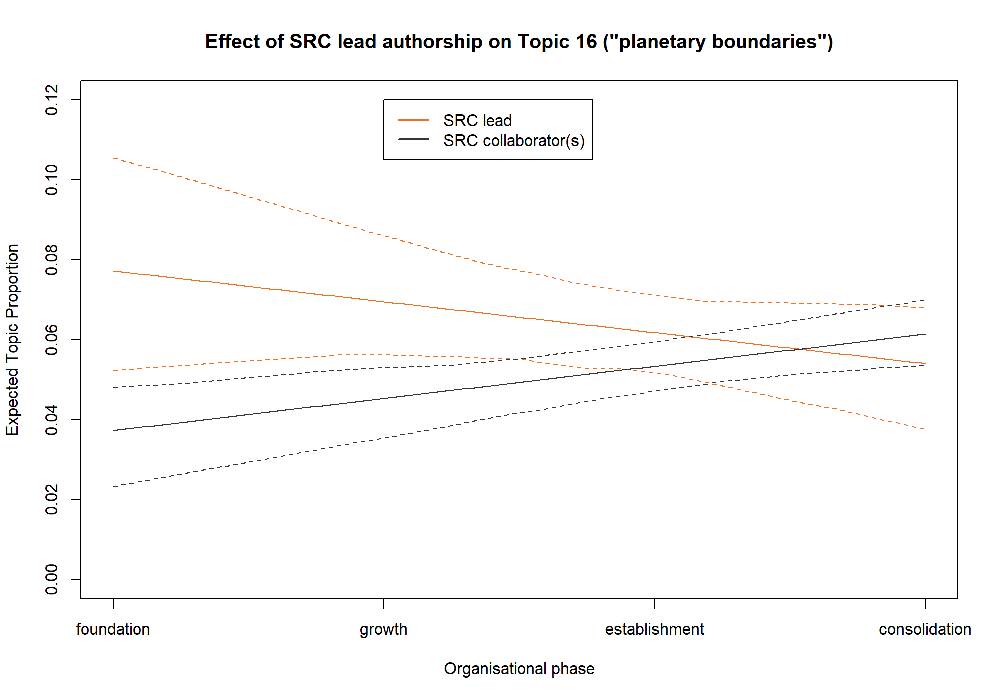

SRC PhD R course Module 9
Topic modelling
Stefan Daume
16. March 2023
SRC PhD R course Module 9
Topic modelling
Why topic modelling?
- discovery, summary, answering causal questions in social science
How does it work?
- unsupervised, probabilistic classification
- generative model (reverses the document generation process)
The notion of “latent topics”
Topic modelling algorithms
- LSA, LDA, CTM, STM
STM vs “vanilla LDA”
- assumption: topics are independent
- test relationship between topics and document meta-data, test hypothesis
Basic text mining concepts
- documents
- corpus
- tokens
- terms
Basic steps
- get documents to analyse
- preprocess
- create a corpus
- tokenization
- create document-term matrix
R packages to use
- quanteda
- tidytext
- snowballc
- spacyr
- stringr
- stm
An example: SRC publications

A simplistic approach
| Term | N |
|---|---|
| social | 265 |
| system | 256 |
| ecolog | 248 |
| ecosystem | 243 |
| sustain | 216 |
| global | 175 |
| chang | 171 |
| manag | 168 |
| resili | 167 |
ngrams: closer to “topics”
| Term | N |
|---|---|
| social ecolog | 165 |
| ecosystem servic | 146 |
| ecolog system | 81 |
| climat chang | 80 |
| baltic sea | 41 |
| food system | 36 |
| planetari boundari | 36 |
| earth system | 34 |
| regim shift | 32 |
What about temporal trends?

Topic modelling with STM
Questions:
- Which latent topics exists?
- How promiment are they?
- Is the topic prevalence influence by document variables?
- How are topics related?
Create a document corpus
- Decide what constitutes a document.
- Create a structured representation of documents with unique document identifiers.
Document corpus with quanteda
# read the source documents
src_pubs <- readr::read_csv("./topicmodels/data/src_pubs_annotated.csv",
col_types = "c")
# create a document corpus using quanteda
pubs_corpus <- src_pubs %>%
quanteda::corpus(docid_field = "doc_id", text_field = "abstract")Tokenize with quanteda
# tokenize the document corpus (here we use words as tokens)
pubs_tokens <- pubs_corpus %>%
quanteda::tokens(what = "word",
remove_punct = TRUE,
remove_symbols = TRUE,
remove_numbers = TRUE,
remove_url = TRUE,
remove_separators = TRUE,
split_hyphens = TRUE)Create a ‘document-feature matrix’ with quanteda
# create a document feature matrix and filter the
# features (here by removing common English stopwords)
pubs_dfm <- pubs_tokens %>%
quanteda::dfm(tolower = TRUE) %>%
quanteda::dfm_remove(pattern = quanteda::stopwords("english")) %>%
quanteda::dfm_wordstem()Filter documents and/or terms
# we can apply additional filtering to the document feature matrix
pubs_dfm <- pubs_dfm %>%
quanteda::dfm_remove(min_nchar = 2) %>%
quanteda::dfm_trim(min_docfreq = 2, docfreq_type = "count") %>%
quanteda::dfm_subset(quanteda::ntoken(.) > 2)Fit the STM topic model
# create a native STM representation of the DFM
stm_docs <- quanteda::convert(pubs_dfm, to = "stm")
# we use 20 topics and consider two covariates
src_topics <- stm(documents = stm_docs$documents,
vocab = stm_docs$vocab,
data = stm_docs$meta,
prevalence = ~ organisation_phase * src_author_role,
K = 20,
verbose = TRUE)Inspect the topic model
# list most probable words (different groups of words are available)
summary(src_topics)
# plot the topic shares/probabilities using plot.STM
plot(src_topics, n = 5)Topics - Terms
summary(src_topics)
#> A topic model with 20 topics, 1906 documents and a 5104 word dictionary.
#> Topic 1 Top Words:
#> Highest Prob: fisheri, fish, fisher, poverti, livelihood, scale, market
#> FREX: poverti, fisheri, fisher, livelihood, trap, women, price
#> Lift: ssf, amend, bigger, bought, buy, daw, homarus
#> Score: fisheri, fisher, fish, poverti, market, trap, livelihood
#> Topic 2 Top Words:
#> Highest Prob: govern, institut, global, chang, polici, ocean, sustain
#> FREX: corpor, institut, govern, innov, ocean, crise, compani
#> Lift: gradualist, multin, philanthropi, preexist, anticipatori, cdm, fip
#> Score: govern, ocean, corpor, institut, actor, coevolv, crise
#> Topic 3 Top Words:
#> Highest Prob: develop, sustain, scenario, goal, use, polici, assess
#> FREX: amr, sdgs, goal, scenario, target, achiev, sdg
#> Lift: bsms, carson, cbd, cousin, emptiv, fell, galvan
#> Score: amr, sdgs, scenario, sdg, cbd, goal, ipb
#> Topic 4 Top Words:
#> Highest Prob: urban, citi, green, area, plan, infrastructur, use
#> FREX: urban, citi, garden, gi, green, ug, infrastructur
#> Lift: peri, antithesi, architect, barcelona, cemeteri, cogitatio, colour
#> Score: urban, citi, green, garden, gi, ug, infrastructur
#> Topic 5 Top Words:
#> Highest Prob: climat, chang, risk, impact, carbon, global, adapt
#> FREX: climat, risk, carbon, hazard, mitig, emiss, vulner
#> Lift: grape, gtc, ipcc, wine, cdr, elsler, nc
#> Score: climat, carbon, emiss, risk, hazard, adapt, chang
#> Topic 6 Top Words:
#> Highest Prob: research, sustain, knowledg, transform, scienc, approach, practic
#> FREX: research, transdisciplinari, think, knowledg, disciplin, transform, interdisciplinari
#> Lift: comment, doctor, espa, interdisciplinar, interrog, intract, journalist
#> Score: transdisciplinari, transform, think, research, disciplin, career, engag
#> Topic 7 Top Words:
#> Highest Prob: social, ecolog, system, resili, complex, dynam, adapt
#> FREX: resili, ecolog, social, ses, system, al, deal
#> Lift: armitag, borrini, chapin, malin, unanticip, ostrom, berk
#> Score: resili, social, ses, ecolog, system, adapt, theori
#> Topic 8 Top Words:
#> Highest Prob: ecosystem, servic, es, valu, well, scale, landscap
#> FREX: es, servic, ecosystem, provis, bundl, off, landscap
#> Lift: cum, ditch, fiber, firewood, photograph, québec, tell
#> Score: servic, es, ecosystem, bundl, ebm, landscap, provis
#> Topic 9 Top Words:
#> Highest Prob: shift, fish, regim, reef, coral, sea, chang
#> FREX: reef, coral, cucumb, iuu, vessel, regim, shift
#> Lift: brew, breweri, fiji, iuu, mayott, ppcps, scuba
#> Score: reef, coral, fish, iuu, cucumb, herbivor, vessel
#> Topic 10 Top Words:
#> Highest Prob: natur, human, scienc, data, springer, peopl, decis
#> FREX: media, natur, mental, springer, behavior, children, switzerland
#> Lift: duinen, hollands, ladder, nationa, nff, uenc, enjoy
#> Score: natur, hnc, children, behavior, supplementari, abm, media
#> Topic 11 Top Words:
#> Highest Prob: govern, adapt, learn, actor, network, collabor, stakehold
#> FREX: learn, collabor, student, actor, stakehold, particip, adapt
#> Lift: acf, brunswick, classroom, igitur, man, misalign, multiactor
#> Score: learn, actor, network, collabor, govern, adapt, student
#> Topic 12 Top Words:
#> Highest Prob: communiti, sustain, local, practic, peopl, cultur, divers
#> FREX: biocultur, indigen, discours, redd, justic, sf, power
#> Lift: artifact, biocultur, centralis, cocreat, dune, historic, linguist
#> Score: indigen, redd, biocultur, sf, justic, forest, discours
#> Topic 13 Top Words:
#> Highest Prob: resourc, behaviour, communiti, cooper, user, individu, group
#> FREX: behaviour, cooper, pool, user, attitud, game, harvest
#> Lift: aggress, balines, everyon, hydrocarbon, megapitaria, methanogen, microorgan
#> Score: cooper, behaviour, harvest, templ, attitud, cell, microbi
#> Topic 14 Top Words:
#> Highest Prob: model, network, data, dynam, analysi, approach, use
#> FREX: node, model, statist, network, graph, simul, nonlinear
#> Lift: barabási, brain, chaotic, crossov, eigenanalysi, ep, epla
#> Score: network, model, node, simul, graph, brokerag, statist
#> Topic 15 Top Words:
#> Highest Prob: water, land, use, forest, region, basin, moistur
#> FREX: moistur, water, evapor, watersh, rainfal, soil, precipit
#> Lift: 2layer, arcswat, companion, envelop, eulerian, hydrochem, inund
#> Score: water, moistur, evapor, precipit, rainfal, basin, hydrolog
#> Topic 16 Top Words:
#> Highest Prob: system, human, earth, boundari, global, planetari, tip
#> FREX: planetari, earth, tip, boundari, safe, element, biospher
#> Lift: chemist, destabilis, interglaci, biocid, biogeophys, domino, johan
#> Score: earth, planetari, tip, anthropocen, boundari, safe, human
#> Topic 17 Top Words:
#> Highest Prob: food, product, system, agricultur, aquacultur, farm, environment
#> FREX: farm, aquacultur, food, nutrit, certif, consumpt, product
#> Lift: acid, affluent, agroecolog, aquafe, buck, cargil, carp
#> Score: aquacultur, food, farm, seafood, nutrit, agricultur, farmer
#> Topic 18 Top Words:
#> Highest Prob: speci, habitat, biodivers, landscap, forest, divers, function
#> FREX: patch, habitat, trait, speci, dispers, invas, plant
#> Lift: acacia, amphibian, apart, macroinvertebr, plcas, allometr, arabl
#> Score: speci, habitat, patch, trait, bird, forest, golf
#> Topic 19 Top Words:
#> Highest Prob: sea, baltic, ice, nutrient, indic, ecosystem, increas
#> FREX: baltic, prey, seabird, oxygen, cod, ice, salin
#> Lift: argentatus, auk, biotop, clupea, copepod, deglaci, dissolut
#> Score: baltic, prey, ice, sea, sheet, predat, nutrient
#> Topic 20 Top Words:
#> Highest Prob: manag, conserv, implement, marin, approach, develop, success
#> FREX: manag, conserv, implement, success, restor, protect, european
#> Lift: bureaucraci, iea, virtu, appeal, ec, forsak, voluntarili
#> Score: conserv, manag, marin, implement, protect, lake, planTopic shares
plot(src_topics, n = 5)
Topic shares

Estimate covariate effects
# this can be estimated for selected topics (here we evaluate all topics)
src_topic_effect <- estimateEffect(1:20 ~ organisation_phase * src_author_role,
stmobj = src_topics,
metadata = stm_docs$meta, uncertainty = "None")
# this summarises the regression stats for the estimated covriate effects
summary(src_topic_effect)Covariate effects summary
summary(src_topic_effect)
#>
#> Call:
#> estimateEffect(formula = 1:20 ~ organisation_phase * src_author_role,
#> stmobj = src_topics, metadata = stm_docs$meta, uncertainty = "None")
#>
#>
#> Topic 1:
#>
#> Coefficients:
#> Estimate Std. Error t value
#> (Intercept) 0.043894 0.010163 4.319
#> organisation_phase -0.003266 0.003211 -1.017
#> src_author_roleSRC lead -0.012772 0.020956 -0.609
#> organisation_phase:src_author_roleSRC lead 0.014053 0.006580 2.136
#> Pr(>|t|)
#> (Intercept) 1.65e-05 ***
#> organisation_phase 0.3092
#> src_author_roleSRC lead 0.5423
#> organisation_phase:src_author_roleSRC lead 0.0328 *
#> ---
#> Signif. codes: 0 '***' 0.001 '**' 0.01 '*' 0.05 '.' 0.1 ' ' 1
#>
#>
#> Topic 2:
#>
#> Coefficients:
#> Estimate Std. Error t value
#> (Intercept) 0.057766 0.009392 6.151
#> organisation_phase -0.003855 0.003055 -1.262
#> src_author_roleSRC lead 0.042349 0.020557 2.060
#> organisation_phase:src_author_roleSRC lead -0.003296 0.006371 -0.517
#> Pr(>|t|)
#> (Intercept) 9.37e-10 ***
#> organisation_phase 0.2071
#> src_author_roleSRC lead 0.0395 *
#> organisation_phase:src_author_roleSRC lead 0.6050
#> ---
#> Signif. codes: 0 '***' 0.001 '**' 0.01 '*' 0.05 '.' 0.1 ' ' 1
#>
#>
#> Topic 3:
#>
#> Coefficients:
#> Estimate Std. Error t value
#> (Intercept) -0.015733 0.010951 -1.437
#> organisation_phase 0.024536 0.003416 7.183
#> src_author_roleSRC lead -0.027101 0.023702 -1.143
#> organisation_phase:src_author_roleSRC lead 0.005026 0.007309 0.688
#> Pr(>|t|)
#> (Intercept) 0.151
#> organisation_phase 9.75e-13 ***
#> src_author_roleSRC lead 0.253
#> organisation_phase:src_author_roleSRC lead 0.492
#> ---
#> Signif. codes: 0 '***' 0.001 '**' 0.01 '*' 0.05 '.' 0.1 ' ' 1
#>
#>
#> Topic 4:
#>
#> Coefficients:
#> Estimate Std. Error t value
#> (Intercept) 0.002311 0.010362 0.223
#> organisation_phase 0.013478 0.003203 4.209
#> src_author_roleSRC lead 0.036058 0.021957 1.642
#> organisation_phase:src_author_roleSRC lead -0.015233 0.006755 -2.255
#> Pr(>|t|)
#> (Intercept) 0.8235
#> organisation_phase 2.69e-05 ***
#> src_author_roleSRC lead 0.1007
#> organisation_phase:src_author_roleSRC lead 0.0242 *
#> ---
#> Signif. codes: 0 '***' 0.001 '**' 0.01 '*' 0.05 '.' 0.1 ' ' 1
#>
#>
#> Topic 5:
#>
#> Coefficients:
#> Estimate Std. Error t value
#> (Intercept) 0.0568356 0.0090635 6.271
#> organisation_phase -0.0005562 0.0028451 -0.196
#> src_author_roleSRC lead -0.0304435 0.0190189 -1.601
#> organisation_phase:src_author_roleSRC lead 0.0044584 0.0059462 0.750
#> Pr(>|t|)
#> (Intercept) 4.43e-10 ***
#> organisation_phase 0.845
#> src_author_roleSRC lead 0.110
#> organisation_phase:src_author_roleSRC lead 0.453
#> ---
#> Signif. codes: 0 '***' 0.001 '**' 0.01 '*' 0.05 '.' 0.1 ' ' 1
#>
#>
#> Topic 6:
#>
#> Coefficients:
#> Estimate Std. Error t value
#> (Intercept) 0.026694 0.013183 2.025
#> organisation_phase 0.016999 0.004130 4.116
#> src_author_roleSRC lead -0.008638 0.028904 -0.299
#> organisation_phase:src_author_roleSRC lead 0.007225 0.008952 0.807
#> Pr(>|t|)
#> (Intercept) 0.043 *
#> organisation_phase 4.03e-05 ***
#> src_author_roleSRC lead 0.765
#> organisation_phase:src_author_roleSRC lead 0.420
#> ---
#> Signif. codes: 0 '***' 0.001 '**' 0.01 '*' 0.05 '.' 0.1 ' ' 1
#>
#>
#> Topic 7:
#>
#> Coefficients:
#> Estimate Std. Error t value
#> (Intercept) 0.081525 0.010367 7.864
#> organisation_phase -0.003548 0.003279 -1.082
#> src_author_roleSRC lead 0.061775 0.020921 2.953
#> organisation_phase:src_author_roleSRC lead -0.009599 0.006538 -1.468
#> Pr(>|t|)
#> (Intercept) 6.18e-15 ***
#> organisation_phase 0.27930
#> src_author_roleSRC lead 0.00319 **
#> organisation_phase:src_author_roleSRC lead 0.14222
#> ---
#> Signif. codes: 0 '***' 0.001 '**' 0.01 '*' 0.05 '.' 0.1 ' ' 1
#>
#>
#> Topic 8:
#>
#> Coefficients:
#> Estimate Std. Error t value
#> (Intercept) 0.069504 0.010251 6.780
#> organisation_phase -0.007221 0.003282 -2.200
#> src_author_roleSRC lead 0.031797 0.020541 1.548
#> organisation_phase:src_author_roleSRC lead -0.007902 0.006456 -1.224
#> Pr(>|t|)
#> (Intercept) 1.6e-11 ***
#> organisation_phase 0.0279 *
#> src_author_roleSRC lead 0.1218
#> organisation_phase:src_author_roleSRC lead 0.2211
#> ---
#> Signif. codes: 0 '***' 0.001 '**' 0.01 '*' 0.05 '.' 0.1 ' ' 1
#>
#>
#> Topic 9:
#>
#> Coefficients:
#> Estimate Std. Error t value
#> (Intercept) 0.068546 0.011160 6.142
#> organisation_phase -0.008991 0.003541 -2.539
#> src_author_roleSRC lead -0.037166 0.023110 -1.608
#> organisation_phase:src_author_roleSRC lead 0.004824 0.007168 0.673
#> Pr(>|t|)
#> (Intercept) 9.9e-10 ***
#> organisation_phase 0.0112 *
#> src_author_roleSRC lead 0.1080
#> organisation_phase:src_author_roleSRC lead 0.5010
#> ---
#> Signif. codes: 0 '***' 0.001 '**' 0.01 '*' 0.05 '.' 0.1 ' ' 1
#>
#>
#> Topic 10:
#>
#> Coefficients:
#> Estimate Std. Error t value
#> (Intercept) 0.010330 0.008994 1.149
#> organisation_phase 0.010580 0.002817 3.755
#> src_author_roleSRC lead 0.033762 0.018491 1.826
#> organisation_phase:src_author_roleSRC lead -0.013698 0.005694 -2.406
#> Pr(>|t|)
#> (Intercept) 0.250851
#> organisation_phase 0.000178 ***
#> src_author_roleSRC lead 0.068027 .
#> organisation_phase:src_author_roleSRC lead 0.016232 *
#> ---
#> Signif. codes: 0 '***' 0.001 '**' 0.01 '*' 0.05 '.' 0.1 ' ' 1
#>
#>
#> Topic 11:
#>
#> Coefficients:
#> Estimate Std. Error t value
#> (Intercept) 0.075595 0.011635 6.497
#> organisation_phase -0.006890 0.003546 -1.943
#> src_author_roleSRC lead -0.002679 0.024140 -0.111
#> organisation_phase:src_author_roleSRC lead 0.008442 0.007487 1.128
#> Pr(>|t|)
#> (Intercept) 1.04e-10 ***
#> organisation_phase 0.0522 .
#> src_author_roleSRC lead 0.9116
#> organisation_phase:src_author_roleSRC lead 0.2596
#> ---
#> Signif. codes: 0 '***' 0.001 '**' 0.01 '*' 0.05 '.' 0.1 ' ' 1
#>
#>
#> Topic 12:
#>
#> Coefficients:
#> Estimate Std. Error t value
#> (Intercept) -0.012018 0.009452 -1.271
#> organisation_phase 0.015693 0.002967 5.289
#> src_author_roleSRC lead 0.022907 0.018680 1.226
#> organisation_phase:src_author_roleSRC lead -0.003150 0.005795 -0.544
#> Pr(>|t|)
#> (Intercept) 0.204
#> organisation_phase 1.37e-07 ***
#> src_author_roleSRC lead 0.220
#> organisation_phase:src_author_roleSRC lead 0.587
#> ---
#> Signif. codes: 0 '***' 0.001 '**' 0.01 '*' 0.05 '.' 0.1 ' ' 1
#>
#>
#> Topic 13:
#>
#> Coefficients:
#> Estimate Std. Error t value
#> (Intercept) 0.021977 0.009304 2.362
#> organisation_phase 0.004206 0.002979 1.412
#> src_author_roleSRC lead 0.009446 0.020470 0.461
#> organisation_phase:src_author_roleSRC lead -0.004049 0.006484 -0.625
#> Pr(>|t|)
#> (Intercept) 0.0183 *
#> organisation_phase 0.1582
#> src_author_roleSRC lead 0.6445
#> organisation_phase:src_author_roleSRC lead 0.5323
#> ---
#> Signif. codes: 0 '***' 0.001 '**' 0.01 '*' 0.05 '.' 0.1 ' ' 1
#>
#>
#> Topic 14:
#>
#> Coefficients:
#> Estimate Std. Error t value
#> (Intercept) 0.059706 0.011585 5.154
#> organisation_phase 0.001077 0.003661 0.294
#> src_author_roleSRC lead -0.029624 0.025034 -1.183
#> organisation_phase:src_author_roleSRC lead -0.001484 0.007906 -0.188
#> Pr(>|t|)
#> (Intercept) 2.82e-07 ***
#> organisation_phase 0.769
#> src_author_roleSRC lead 0.237
#> organisation_phase:src_author_roleSRC lead 0.851
#> ---
#> Signif. codes: 0 '***' 0.001 '**' 0.01 '*' 0.05 '.' 0.1 ' ' 1
#>
#>
#> Topic 15:
#>
#> Coefficients:
#> Estimate Std. Error t value
#> (Intercept) 0.081321 0.012085 6.729
#> organisation_phase -0.010532 0.003927 -2.682
#> src_author_roleSRC lead -0.032934 0.024053 -1.369
#> organisation_phase:src_author_roleSRC lead 0.008473 0.007669 1.105
#> Pr(>|t|)
#> (Intercept) 2.26e-11 ***
#> organisation_phase 0.00739 **
#> src_author_roleSRC lead 0.17109
#> organisation_phase:src_author_roleSRC lead 0.26939
#> ---
#> Signif. codes: 0 '***' 0.001 '**' 0.01 '*' 0.05 '.' 0.1 ' ' 1
#>
#>
#> Topic 16:
#>
#> Coefficients:
#> Estimate Std. Error t value
#> (Intercept) 0.029945 0.010781 2.778
#> organisation_phase 0.007309 0.003392 2.155
#> src_author_roleSRC lead 0.055467 0.022307 2.487
#> organisation_phase:src_author_roleSRC lead -0.015391 0.007009 -2.196
#> Pr(>|t|)
#> (Intercept) 0.00553 **
#> organisation_phase 0.03132 *
#> src_author_roleSRC lead 0.01298 *
#> organisation_phase:src_author_roleSRC lead 0.02823 *
#> ---
#> Signif. codes: 0 '***' 0.001 '**' 0.01 '*' 0.05 '.' 0.1 ' ' 1
#>
#>
#> Topic 17:
#>
#> Coefficients:
#> Estimate Std. Error t value
#> (Intercept) 0.0265394 0.0125760 2.110
#> organisation_phase 0.0096007 0.0039190 2.450
#> src_author_roleSRC lead -0.0125880 0.0263187 -0.478
#> organisation_phase:src_author_roleSRC lead -0.0003143 0.0083236 -0.038
#> Pr(>|t|)
#> (Intercept) 0.0350 *
#> organisation_phase 0.0144 *
#> src_author_roleSRC lead 0.6325
#> organisation_phase:src_author_roleSRC lead 0.9699
#> ---
#> Signif. codes: 0 '***' 0.001 '**' 0.01 '*' 0.05 '.' 0.1 ' ' 1
#>
#>
#> Topic 18:
#>
#> Coefficients:
#> Estimate Std. Error t value
#> (Intercept) 0.103303 0.010497 9.841
#> organisation_phase -0.019816 0.003281 -6.040
#> src_author_roleSRC lead -0.026343 0.023161 -1.137
#> organisation_phase:src_author_roleSRC lead 0.003415 0.007127 0.479
#> Pr(>|t|)
#> (Intercept) < 2e-16 ***
#> organisation_phase 1.85e-09 ***
#> src_author_roleSRC lead 0.256
#> organisation_phase:src_author_roleSRC lead 0.632
#> ---
#> Signif. codes: 0 '***' 0.001 '**' 0.01 '*' 0.05 '.' 0.1 ' ' 1
#>
#>
#> Topic 19:
#>
#> Coefficients:
#> Estimate Std. Error t value
#> (Intercept) 0.133034 0.013495 9.858
#> organisation_phase -0.027098 0.004202 -6.449
#> src_author_roleSRC lead -0.093693 0.028949 -3.236
#> organisation_phase:src_author_roleSRC lead 0.022383 0.009004 2.486
#> Pr(>|t|)
#> (Intercept) < 2e-16 ***
#> organisation_phase 1.42e-10 ***
#> src_author_roleSRC lead 0.00123 **
#> organisation_phase:src_author_roleSRC lead 0.01301 *
#> ---
#> Signif. codes: 0 '***' 0.001 '**' 0.01 '*' 0.05 '.' 0.1 ' ' 1
#>
#>
#> Topic 20:
#>
#> Coefficients:
#> Estimate Std. Error t value
#> (Intercept) 0.075348 0.007125 10.575
#> organisation_phase -0.010503 0.002230 -4.709
#> src_author_roleSRC lead 0.021704 0.015073 1.440
#> organisation_phase:src_author_roleSRC lead -0.004433 0.004694 -0.944
#> Pr(>|t|)
#> (Intercept) < 2e-16 ***
#> organisation_phase 2.66e-06 ***
#> src_author_roleSRC lead 0.150
#> organisation_phase:src_author_roleSRC lead 0.345
#> ---
#> Signif. codes: 0 '***' 0.001 '**' 0.01 '*' 0.05 '.' 0.1 ' ' 1Example 1: Topics over time
Example 2: SRC lead authorship

Example 3: SRC lead authorship

Example 4: Combined effects

Exercise
- fit the model with a different K
- test a different prevalence formula (for example
n_authorsoropen_access) - estimate the covariate effect for this model
- adapt the examples in the script for other topics and covariates
Thank You!
Key Resources
- R Markdown
- R Markdown: The Definitive Guide (Xie, Allaire, and Grolemund 2022)
- Cheatsheet: Dynamic documents with rmarkdown cheatsheet
- Git/Github:
- Happy Git and GitHub for the useR (Bryan 2021)
- “Excuse me, do you have a moment to talk about version control?” (Bryan 2017)
- Advanced git use: Pro Git book (Chacon and Straub 2014)
- How to write a great commit message
References
Bryan, Jennifer. 2017. “Excuse me, do you have a moment to talk about version control?” PeerJ Preprints 5:e3159v2 (August). https://doi.org/10.7287/PEERJ.PREPRINTS.3159V2.
———. 2021. “Happy Git and GitHub for the useR.” https://happygitwithr.com/.
Chacon, Scott, and Ben Straub. 2014. Pro Git. Apress. https://doi.org/10.1007/978-1-4842-0076-6.
Xie, Yihui, J. J. Allaire, and Garrett Grolemund. 2022. “R Markdown: The Definitive Guide.” https://bookdown.org/yihui/rmarkdown/.
Colophon
SRC PhD R course Module 7 — Interactive R Markdown with Shiny" by Stefan Daume
Presented on 16. December 2022.
This presentation can be cited using: doi:…
PRESENTATION DETAILS
Author/Affiliation: Stefan Daume, Stockholm Resilience Centre, Stockholm University
Presentation URL: https://sdaume.github.io/r-course-module-3/slides/shiny-module.html
Presentation Source: [TBD]
Presentation PDF: [TBD]
CREDITS & LICENSES
This presentation is delivered with the help of several free and open source tools and libraries. It utilises the reveal.js presentation framework and has been created using RMarkdown, knitr, RStudio and Pandoc. highlight.js provides syntax highlighting for code sections. MathJax supports the rendering of mathematical notations. PDF and JPG copies of this presentation were generated with DeckTape. Please note the respective licenses of these tools and libraries.
If not noted and attributed otherwise, the contents (text, charts, images) of this presentation are Copyright © 2022 of the Author and provided under a CC BY 4.0 public domain license.